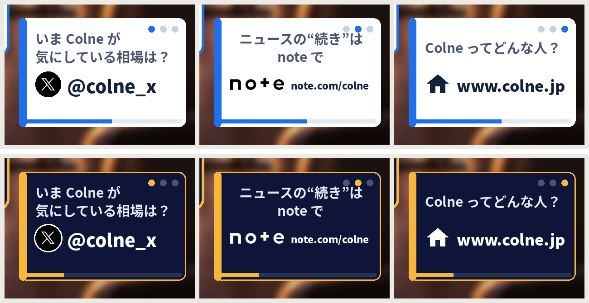
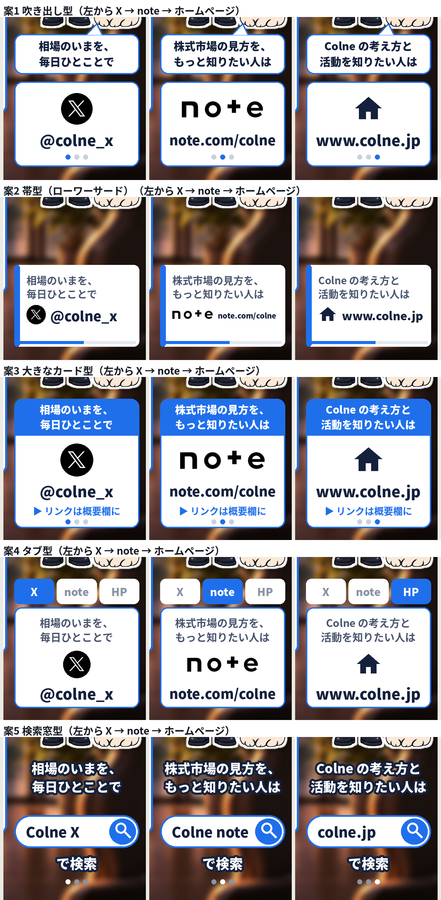
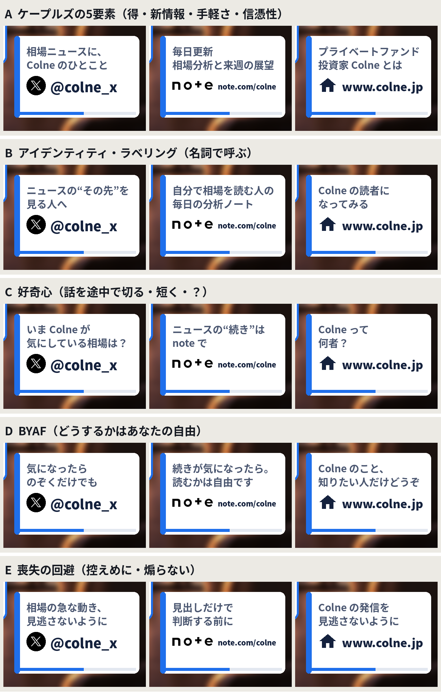
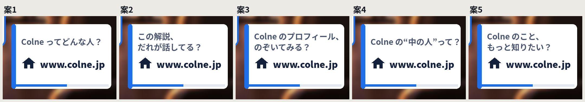
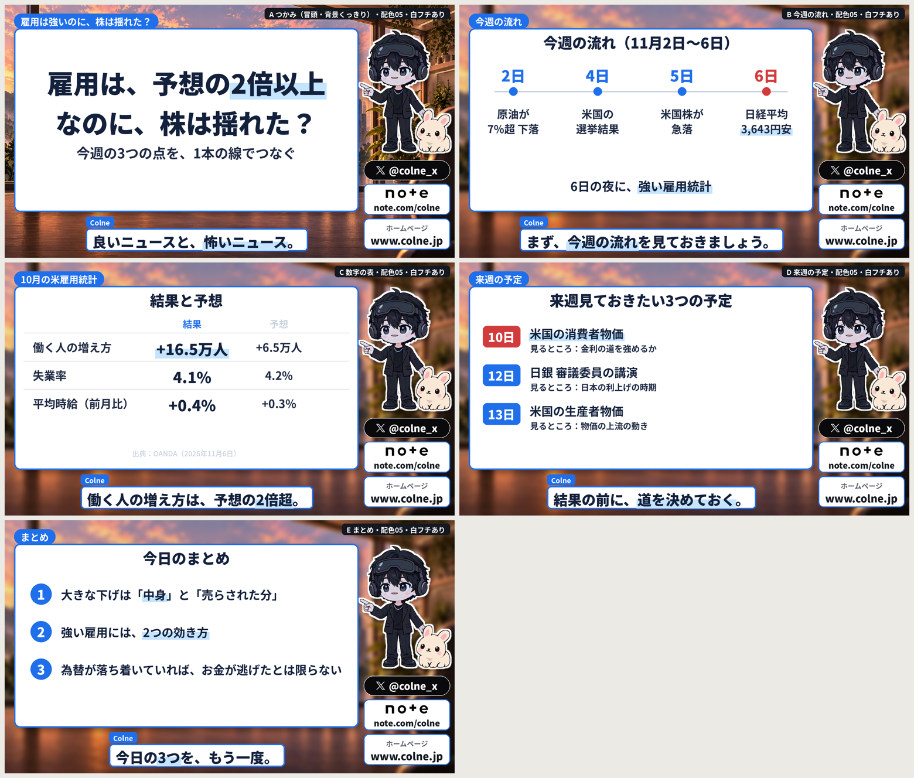
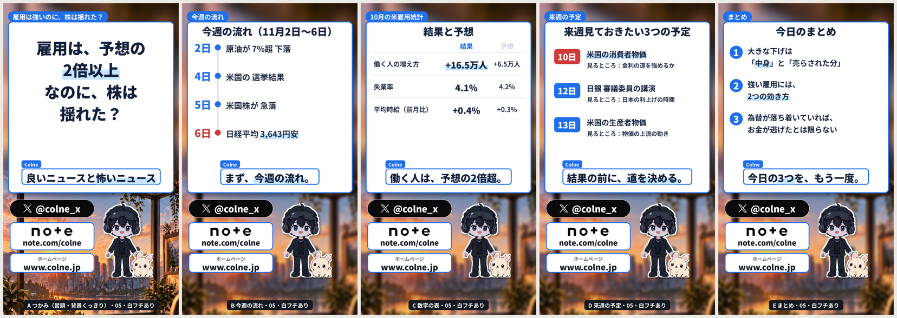
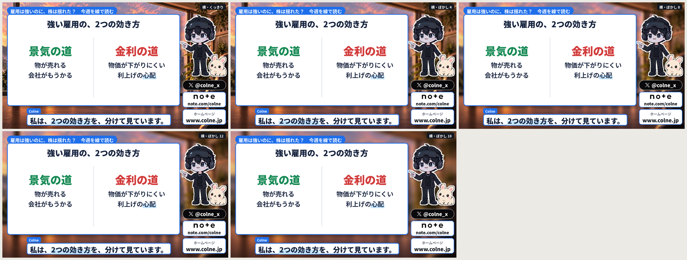
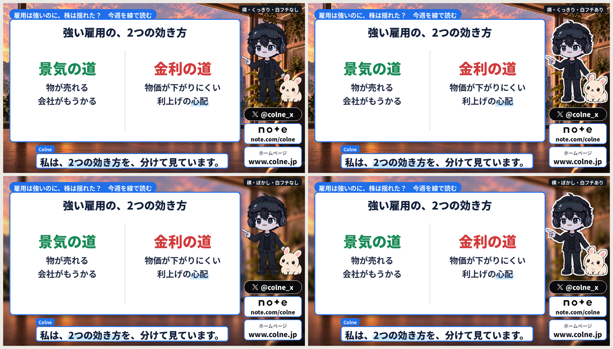

確認用。動画はクリックで再生できます。
キャッチコピー：X「いま Colne が気にしている相場は？」／note「ニュースの“続き”は note で」／ホームページ「Colne ってどんな人？」。見本は4秒ごとに切り替え（本番は30秒ごと）。

横動画05の最初の62秒。34秒の「まず、今週の流れを」から4秒かけてぼかす。







最初のキャッチコピー（v1）／根拠を見直した版（v2）／Dラボ案C（何者？の版）